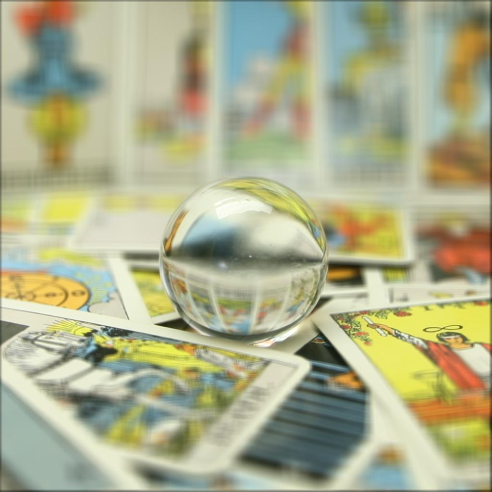

Given sample datasets comprising of multiple images taken over a regularly spaced grid, we had 17x17 set of pictures that simulated a lightfield camera. By taking the average of the pictures we get a depth focus with a section that is clear and the rest of the final image is blurred. Yet when shifting the images based on a weight, alpha, that is multiplied by the centroid (u, v) coordiantes of all the images, we can shift the focus of the final image based on the average of all the shifted images. As alpha becomes smaller and more negative, the farther depths of the image are in focus. As alpha becomes positive and larger, the more closer depths become in focus. Below are alpha values and the corresponding final images and below that are gifs showing how focus can change in an image by changing the alpha values.
|
alpha = -.5 |
alpha = -.4 |
alpha = -.3 |
alpha = -.2 |
|
alpha = -.1 |
alpha = .0 |
alpha = .1 |
alpha = .2 |
alpha = .3 |
 sphere
sphere |
chess |
By picking a certain alpha from the previous part, we can also simulate a change in aperature to change the amount a picture is blurred. With a bigger, radius, we produce a larger aperature. With a radius of 0, we just took the center images of our database, with radius 1, we expanded our samples for depth refocusing to all the surrounding images of the radius 0 image. Then radius 2 expands to all the images surrounding the radius 0 and 1 images. Then this can go on until radius is 7. With more pictures to sample from, the blurrier the final image will be. The following images are the sphere database with different radii to show how a higher radius simulates a higher aperature. Below that are gifs of different datasets changing at different aperatures.
|
radius = 0 |
radius = 1 |
radius = 2 |
radius = 3 |
|
radius = 4 |
radius = 5 |
radius = 6 |

radius = 7 |
|
legos | alpha = -.2 |
more legos | alpha = .1 |
 sphere | alpha = .2
sphere | alpha = .2 |
Its amazing how a lightfield camera can simulate an image at multiple aperatures and at different depth of focuses based using multiple images of the same scene. Before this project, I didn't realize how simple it is to manipulat aperatures and depth of focus with simple math.